| 中華早點 | 福井日本料理 | 白帝城 | 神仙滷味 | 山姆漢堡 Sam's Burger |
| 0981咖啡 | 川牛 | 來來牛排 | 春一枝(總店) | 福原豆腐店 |
| 黃記蔥油餅 | 寶桑豆花 |
| 海濱公園 | 鐵花村市集 | 台東大學圖書館 | 台東觀光夜市、四維夜市 | 三仙台 |
| 鹿野高台 | 初鹿農場 | 曙光園區 | 金針山 | 伯朗大道 |
| 知本森林遊樂區 | 關山親水公園 | 台東森林公園 | 小野柳 | 都歷沙灘 |
| 多良火車站 |
| 星星部落 | 望園景觀茶坊 | 倆么九 | 都蘭海角咖啡 | 小魚兒的家 |
| 藍色愛情海 |
#常去#在地
營業時間:05:30–11:30
地址:950台東縣台東市中華路一段283號
說到台東人的早餐，一定會想到中式早餐店「中華早點」啦!位於中華路上的中華早點，早上經過必定是大排長龍阿
基本的饅頭、豆漿油條、蔥蛋等等小邊就不多提了。必推的黯然銷魂滷肉飯配上絕命半熟荷包蛋，可說是人間美味的絕配阿，光這個組合，就沒有不推薦的理由啦
https://www.facebook.com/taitung089343148
返回目錄
#在地
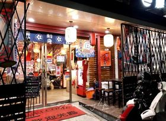營業時間:11:30–14:00
17:30–21:00
地址:950台東縣台東市中山路351號
CP值超高的評價日式料理，新鮮的食材，豐富的口感、職人的精神，小編心中台東日式料理的第一名，另外私心推薦滿月壽司。
每次來都在搏運氣，因為不見得有位子阿，建議想吃的可事先預約，台東平價日式料理第一推薦。
https://www.facebook.com/fu089334038/
返回目錄
#常去#宵夜
營業時間:17:00~00:00
地址:950台東縣台東市中山路351號
雖然是連鎖店，但是卻是大學生中數一數二推薦的滷味名店，價格公道、湯頭好喝、食材入味，晚餐、宵夜必推。
https://www.facebook.com/%E7%99%BD%E5%B8%9D%E5%9F%8E%E5%B7%9D%E5%BC%8F%E6%BB%B7%E5%91%B3%E5%8F%B0%E6%9D%B1%E4%B8%AD%E5%B1%B1%E5%BA%97-1295951233901036/
返回目錄
#常去#宵夜
營業時間:16:30~00:00
地址:950台東縣台東市正氣路154號
喜歡吃麻辣的來這間就對了，豐富多樣的選擇，大學生最常來的滷味店，雖然每次排隊的人龍都很長，但是等待是值得的，晚餐、宵夜的好去處。
https://www.facebook.com/%E7%A5%9E%E4%BB%99%E6%BB%B7%E5%91%B3-571325849550079/
返回目錄
#在地#常去
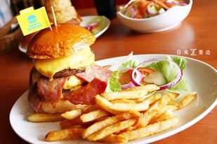營業時間:11:00–14:30
17:00–21:00
地址:950台東縣台東市信義路186號
連歪國朋友都說讚的美式餐廳，高達20多種的漢堡可供各位選擇，照顧愛吃漢堡又挑嘴的你，絕對能滿足你漢堡控的需求
當你聽到廚房有啪啪啪的聲音，別懷疑，是在做漢堡排拉。除了漢堡，沙拉、炸物、燉飯、義大利麵，都非常美味喔，喜歡美式料理的千萬別錯過。
https://www.facebook.com/SamsBurger.tw/
返回目錄
#常去#宵夜
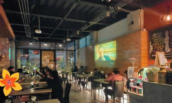營業時間:8:00~2:00
地址:950台東縣台東市中正路232號
全時段供應的餐廳，從早餐到宵夜，零八九一咖啡都照顧得到你的胃，大學生之間必推的餐廳咖啡廳。
早午餐、義大利麵/飯、中式、日式、簡餐、火鍋、甜點、咖啡等等的，滿足不知道吃什麼的你們。而且CP值高份量夠，約會、聚餐的好地方。(偶爾還會放電影歐)
https://www.facebook.com/%E9%9B%B6%E4%B9%9D%E5%85%AB%E4%B8%80%E5%92%96%E5%95%A1-0981-795791503863994/
返回目錄
返回目錄
#常去
營業時間：11:00–21:00
地址:台東縣台東市更生路148巷33號
台東最好吃的炙燒丼飯，超高CP值，雙倍肉量只要150元!!!直火炙燒鎖住肉汁原味，鹹香誘人，光看就讓人流口水了！
這時候再加顆溫泉蛋，讓黃澄澄的蛋液流溢在燒肉與米飯間，一起入口，吃起來可是超過癮滴！台東大學生吃4年都吃不膩的丼飯店。
https://www.facebook.com/add.888/
返回目錄
#在地
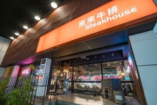
營業時間：14：00-21：30
地址:950台東縣台東市新生路268-3號
台東來來牛排館是東部特有的牛排店，是走美式工業風格的平價牛排館，價格便宜且食物好吃，重點有些店員會穿乳牛裝，超可愛的啦！不管是朋友聚會、慶生、節日都超適合。
https://www.facebook.com/oseatlailai09/
返回目錄
#在地#伴手禮
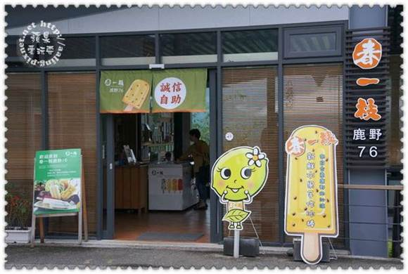
營業時間：08:00–18:00
地址:台東縣鹿野鄉高台路76號
全台灣都有的知名冰棒「春一枝」發源地就是在台東啊!用最天然的食材做成的冰棒，不只健康又好吃，更是消暑的救命仙丹阿。
而且春一枝還會因為地區不同而有不同的口味或是特殊冰棒棍造型歐，而台東的特殊口味就是釋迦口味拉，在台東各大名勝區都買得到喔。夏日送禮最佳伴手禮，就屬春一枝!
https://icespring.com.tw/?fbclid=IwAR1ZDcqrAGC_XlTPQzoLl_hMUCuYVS6WaLdtjJ4deDdNhLkMoES9aM_mTkc
返回目錄
#在地
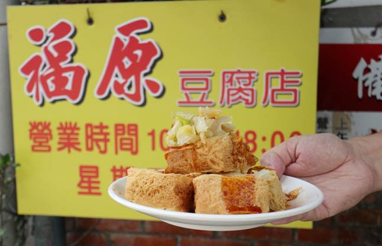
營業時間：10:00-18:00
地址:台東縣池上鄉中西三路70號
地點有點隱密，隱身在巷弄內，若不是見到招牌，根本不會覺得是賣豆腐及豆花的店家，招牌也有點低調，若不是導航帶領，可能還不會發現，
算是台東人的私房美食歐! 外酥內嫩香豆腐、滑嫩豆花、豆漿特別的山葵醬油豆花，池上旅遊必吃!
https://www.facebook.com/pages/%E6%B1%A0%E4%B8%8A%E7%A6%8F%E5%8E%9F%E8%B1%86%E8%85%90%E5%BA%97/461440237260960/
返回目錄
#在地
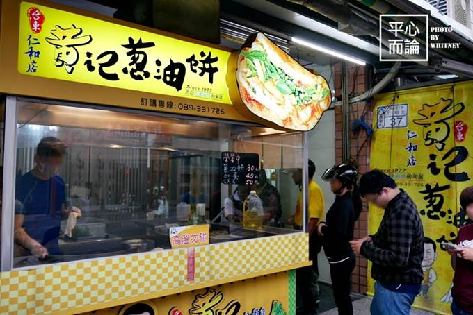
營業時間：14：00-18：00
地址:950台東縣台東市南海路36號
這裡的麵糰都是手工揉製的，一球球已經揉製好的麵糰，客人點好後再將麵糰擀成薄薄的餅皮下鍋。黃記蔥油餅除了滿滿的蔥花之外，
這裡的特色就是會加上爆香的九層塔。最後再刷上醬汁。醬油膏帶有甜味，辣醬不怎麼辣，餅皮煎的香酥還帶點微焦，吃起來既有彈性又帶點酥酥的口感，非常推薦大家來吃吃。
https://www.facebook.com/%E9%BB%83%E8%A8%98%E8%94%A5%E6%B2%B9%E9%A4%85%E6%B5%B7%E6%BF%B1%E5%BA%97-440404255983022/
返回目錄
#在地
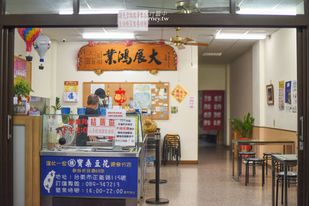
營業時間：14：00-21：30
地址:950台東縣台東市正氣路115號
除了寶桑湯圓之外，來到台東也不要忘記吃碗寶桑豆花，簡單的材料，孕育出富有深度的滋味，淺嚐一口豆花，入口瞬間豆香四溢，綿柔入口即化的口感，令人回味無窮。
https://www.facebook.com/profile.php?id=100063743330413
返回目錄
#常去#自然#人文
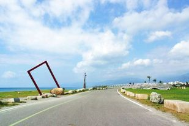
營業時間：24小時
地址:臺東縣臺東市新生路135巷26號
融合地景與公共藝術，標誌臺東獨特的人文、歷史與自然景觀，白天，它迎接清晨的第一道曙光，夜晚，暈黃燈光照耀，吹著海風散著步，大學生最喜歡的看海聖地。
#常去#人文
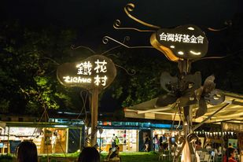
營業時間：17:00~22:00
地址:臺東縣臺東市新生路135巷26號
第一次來台東、最有印象的就是這裡。由臺東音樂人和藝術工作者共同打造的音樂聚落及在地發芽的慢市集，可說是臺東的音樂集散地。
假日的市集，販售著獨特的手作小物、農特產品。晚上閒來無事，步紡來這裡多走走，感受文藝的氣息，享受台東的慢活氛圍。
#常去#人文
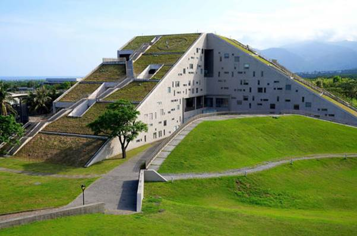營業時間: 24小時
地址:950台東縣台東市大學路二段369號
台東大學圖書館不但曾經被選為世界八大特色圖書館建築、台灣十大非去不可圖書館、更有全世界此生必去1001座圖書館之稱。
圖書館最上方是個小小的觀景台，可以一覽全台東大學的美景，在爬的沿途還有可愛的小標示提醒爬了多少階歐。說了這麼多還是自己來走走看看吧!
#常去#宵夜
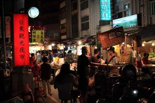
台東夜市營業時間：
星期四 17:00–23:00
星期五 17:00–23:00
星期六 17:00–23:00
四維夜市：
星期日
星期日 18:00–00:00
台東觀光夜市地址:950台東縣台東市正氣路300之1號
四維夜市地址：950台東縣台東市四維路一段464巷
台東人最常去的夜市就所屬台東觀光夜市與四維夜市啦，各式各樣的攤販都有，最道地的石板烤肉、在地食材小米甜甜圈等等都在這裡，這裡也是大學生最常來買宵夜的地方呢
#自然#日出
營業時間：24小時
地址:台東縣成功鎮基翬路74號
台灣寶島每天的第一道曙光總先灑落在三仙台，當曙光乍現時，也喚醒了沈睡的大地，台東看日出的最佳選擇！
而這邊也是許許多多傳說的發源地歐，在三仙台許願島許願，有太陽神、海神、大地神及三仙的加持，並有海龍「及發烏安」的守護，
不妨下次來這邊的時候許個願吧！（八拱橋常因颱風影響，偶爾會有關閉維修的情況，來之前建議先查過是否開放歐）
#自然#日出
營業時間：24小時
地址:台東縣鹿野鄉永安村高台路42巷145號
鹿野高台擁有絕佳視野，能夠一覽整個高台地區與卑南溪谷底的田野景色，由於其特殊的地理條件，也是臺灣東部一處優良的天然空域活動場地。
而在6月至8月時，正是鹿野高台進行國際熱氣球嘉年華的好時機，而平時沒有熱氣球活動時，這裡是滑草的熱門場地。
#自然#人文
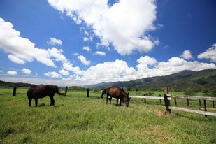
營業時間：08:00 – 17:00
地址:台東縣卑南鄉牧場1號
初鹿牧場是全臺灣最大的坡地牧場，面積大約67公頃，成群乳牛悠閒的在如茵草原上漫步，雪白的圍欄、朱紅的房，在蔚藍天空和柔軟白雲襯托下，彷彿如詩如畫的歐洲莊園，讓人陶醉不己。
#自然#人文
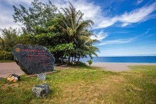
營業時間：24小時
地址:台東縣太麻里鄉南迴公路35號
園區內設有停車場、休憩亭臺、散步步道，還有極具紀念價質的「曙光紀念牆」與「曙光紀念碑」。這裡有著全台灣第一道署光，漫步沙灘上，優閒看著海，還是個適合跨年的好地方。
#自然
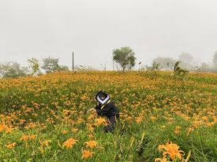
營業時間：24小時
地址:臺東縣太麻里鄉大王村金針山休閒農業區
金針山花季：
1~3月櫻花，4~5月野百合，6~7月繡球花，8~10月金針花，11~12月楓葉。
金針山景觀豐富有溪流有瀑布有高山有峽谷，炎夏賞花淡季時，來到金針山不怕沒有東西看，深入山林，沿著溪谷，螢光點點，心曠神怡。是個告白、求婚、拍婚紗的好地方
#自然#人文
營業時間：24小時
地址:臺東縣池上鄉伯朗大道
臺東縣池上鄉的一條田園小路，因拍攝了伯朗咖啡的廣告而廣受歡迎，被譽為是一條「翠綠的天堂路」。
廣大翠綠的稻田，路旁沒有一支電線桿，真真實實感受到一望無際，不僅有著拍照的好景色，更能帶著心靈遠離喧囂擾嚷，親身體驗一次放鬆的純粹。(大道內禁行汽機車喔)
#自然#人文
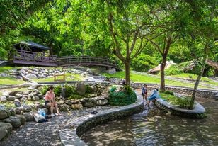
營業時間：08:00 – 17:00
地址:台東縣卑南鄉龍泉路290號
知本森林遊樂區宛如一間生態教室，沿著區內的林蔭步道行走，可以隨著沿路的解說牌了解各種動植物，
尤以鳥類資源最豐富，是臺東市郊賞鳥的最佳地點，野營活動場適合露營，與三五好友來個輕鬆的野餐，也是親近自然的好選擇。
#自然#人文
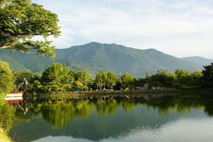
營業時間：07:00–17:30
地址:臺東縣關山鎮隆盛路1號
關山親水公園是臺灣第一座環保公園，園區內與關山環鎮自行車道結合，遊客可以在這裡騎著鐵馬觀賞野鳥與各種自然生態，
非常適合全家大小一起來走走。身為大學生的我們在這邊悠閒地騎腳踏車，沿著湖畔享受台東獨有的慢活氣氛。
#自然#人文
營業時間：07:30–19:30
地址:台東縣台東市華泰路300號
開闊的臺東森林公園距離臺東市僅幾分鐘車程，沿著馬亨亨大道即可到達，是一處令人流連忘返的公園，臺東森林公園擁有三座湖，
分別為地下湧泉形成的「琵琶湖」、原本為沼澤濕地後經過整治的「鷺鷥湖」，與人工興建能夠舉辦各項水域及鐵人競賽活動的「活水湖」，每一座湖都是一個人間美景
#自然
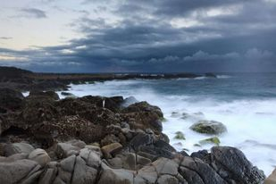
營業時間：24小時
地址:台東縣台東市松江路一段500號
小野柳緊鄰富岡漁港，因造型多變的海蝕景觀酷似北海岸的野柳，因此得名，這裡有各種景象綺麗的奇岩怪石，
如單斜脊、蜂窩岩、龜陣岩、豆腐岩、蕈狀岩等等，宛如一座天然雕刻公園。天氣晴朗時，自小野柳遙望東邊，還能清楚看見32公里之外的綠島。
#自然
營業時間：24小時
地址:臺東縣臺東市都歷沙灘
都歷海灘上得天獨厚的黑沙灘，那美麗的倒影映在沙中，像是漫步在雲端中，反射出蔚藍的天空的鏡面效果，讓人不禁流連忘返，捨不得離去。
如果想要拍到倒映美照，要在退潮時才拍出來，到訪前可以留意當日潮汐。
#自然#人文
營業時間：24小時
地址:臺東縣太麻里鄉多良村瀧溪路8-1號
被譽為「全臺灣最美車站」，除了來欣賞一覽無遺的太平洋海景，也千萬別錯過附近的美食區，當地部落特色美食，搭配獨特的鐵道海景視野，來多良車站享受片刻的愜意時光吧。
https://tour.taitung.gov.tw/zh-tw/attraction/details/429?fbclid=IwAR3lfKKMjeYy1vyLhyLg7zDq90DV6a5NBzg7XXo9HNeFkGTqDo122fFs4NY
返回目錄
#夜景#宵夜
營業時間:18:00~01:30
地址:954台東縣卑南鄉8鄰號
作為台東大學生，星星部落是一定要去過的地方，除了是一望台東夜景的地方，也是吹風散心的好所在，而且這裡還有一堆兔子歐。
https://www.facebook.com/%E6%98%9F%E6%98%9F%E9%83%A8%E8%90%BD%E6%99%AF%E8%A7%80%E5%92%96%E5%95%A1-181799101867492/#夜景
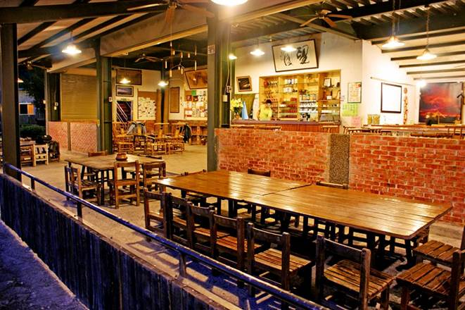營業時間:18:00~01:00
地址:954台東縣卑南鄉利嘉村利嘉路689巷19號
這邊是台東人的烤肉聖地，肉要自行去買再帶來這邊烤(夾子、網子需自備)，這邊是按人頭收費一人100，
包含幫你燒好的炭火烤爐、隨時加炭、垃圾清潔，相當的划算。如此之外還能跟店家買茶葉來泡，悠閒喝茶、吹著風、看夜景，十分愜意。
#夜景#在地#消夜
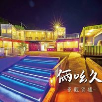營業時間:17:30~00:00
地址:954台東縣卑南鄉文化公園路200號
想吃正餐又想看夜景?來這邊就對了。道地的山豬石板烤肉、鮮嫩多汁的桶子雞、風味獨特的野菜料理，
吃好喝好看美景，屬實俩么久最適合。除了正餐外，輕食、炸物、特調樣樣有，吃飽後來此一樣適合。
https://www.facebook.com/219TWOONENINE219/
返回目錄
#自然#在地
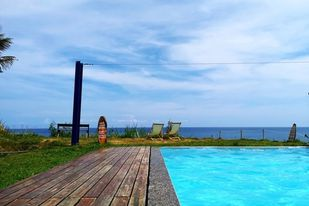
營業時間：10:00–17:30
地址:台東縣東河鄉舊部路47鄰10-14號
台東都蘭海角咖啡位於東河鄉南端的「都蘭村」，位於海岸線邊的都蘭海角咖啡地點相當低調，開入一段小路抵達後，有種柳岸花明又一村的感覺，
這裡擁有大片的綠地、乘涼的大樹、能游泳的泳池，還能欣賞到美麗的台東海岸線，是間很特別的海景咖啡，值得一訪啊。
https://www.facebook.com/capeparadisedulan/
返回目錄
#自然#在地
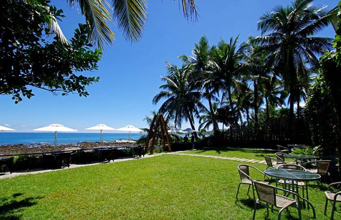
營業時間：10:00–18:00
地址:台東縣卑南鄉杉原32號
小魚兒的家是間純白色的兩層樓小木屋，不僅室內空間更加寬敞舒適，還設置了戶外庭園和沙坑，讓人更能夠貼近大自然，彷彿置身渡假村阿。
這裡不只有無敵還景，鄰近的景點有杉原海灘和富山護漁區。想要白天吃飯看美景，小魚兒的家是絕對的必推首選!
https://www.facebook.com/littlefishs0913916875/
返回目錄
#自然#在地
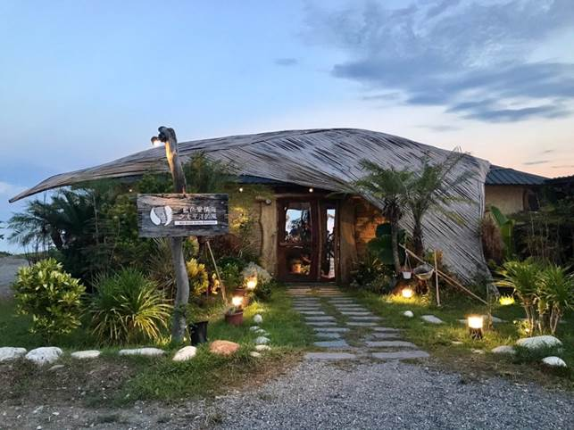
營業時間：12:00–14:00
17:30–21:00
地址:台東縣台東市吉林路二段634號
藍色愛情海在非常小的巷子裡頭，快到附近的時候記得開慢一點，以免錯過喔。這是一間原住民風味的餐廳，
小菜清爽開胃、燒肉金黃微脆、海產新鮮美味，還有須多無菜單的尹良料你，等你來嘗鮮。看著台東的海，吃著道地原住民料理，一起融入台東生活吧!
https://www.facebook.com/%E8%97%8D%E8%89%B2%E6%84%9B%E6%83%85%E6%B5%B7-102650811736714/
返回目錄